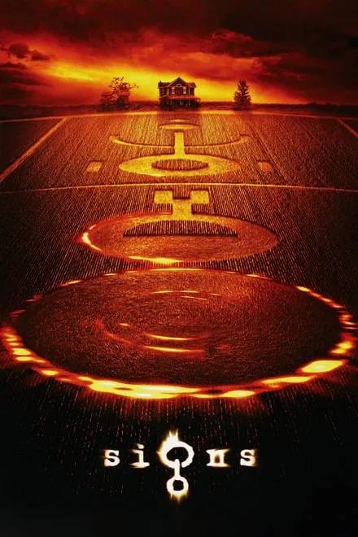
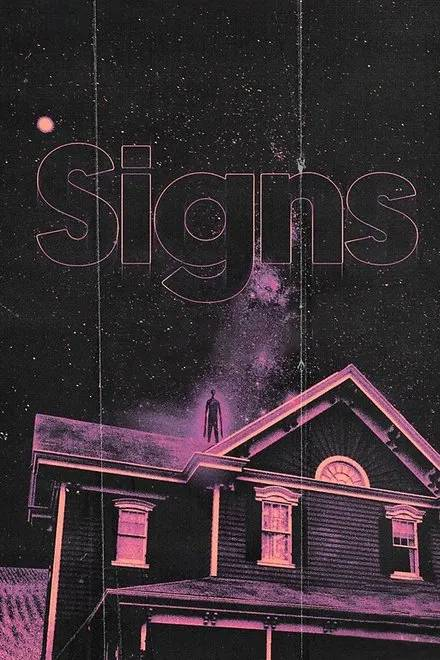
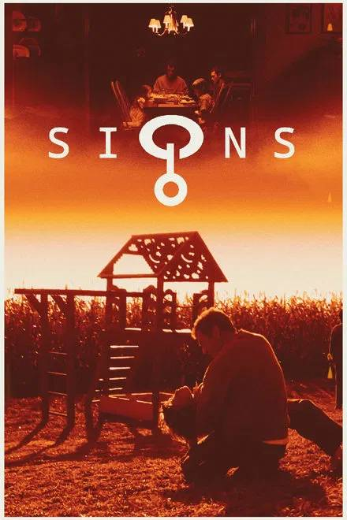
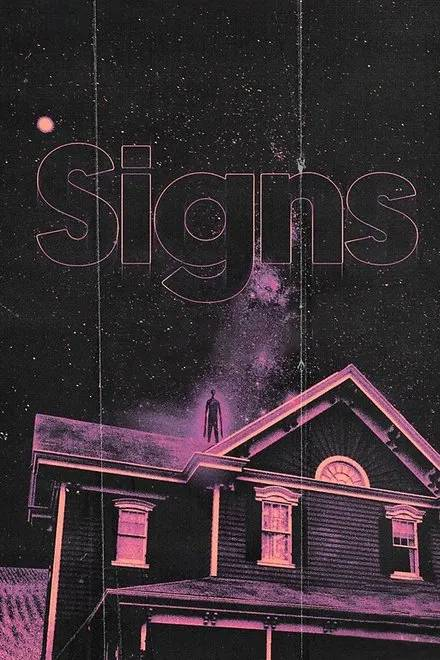
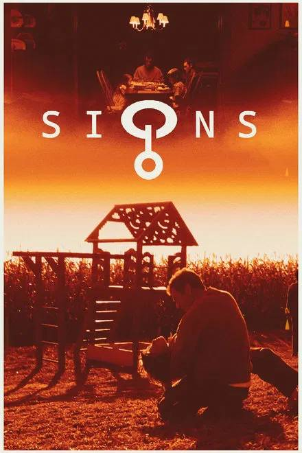
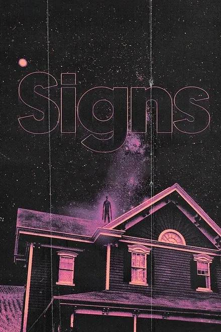
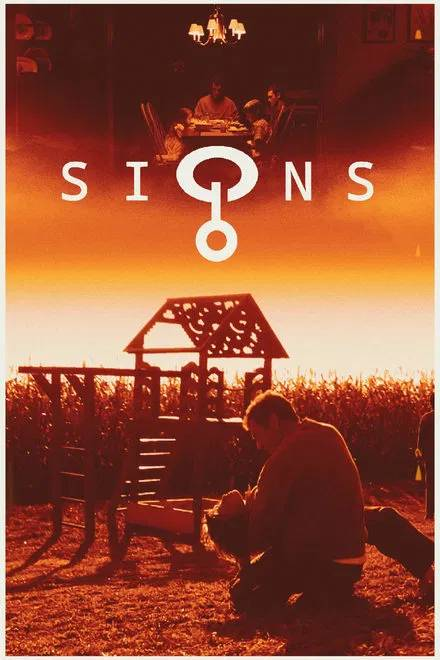
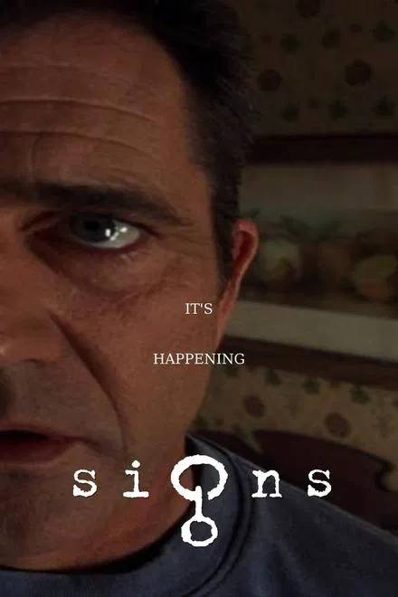

Signs (2002) dir. M. Night Shyamalan | Rated PG-13 | Touchstone Pictures

 







Signs is the film that almost
single-handledly saved my faith.
I've seen it nine times and
it always gives me comfort in
reminding me that God is always
watching out for me.